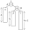
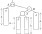
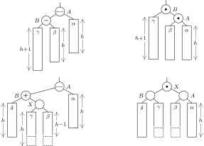

Design & Analysis: Algorithms
16: Balanced Binary Search Trees
Divide & Conquer
Schedule
| # | date | topic | description |
|---|---|---|---|
| 1 | 09-Jan-2023 | Introduction and Introductions | |
| 2 | 11-Jan-2023 | Basics of Algorithm Analysis | |
| 16-Jan-2023 | Holiday | ||
| 3 | 18-Jan-2023 | Asymptotic Analysis | hw1 |
| 4 | 23-Jan-2023 | Recurrence Relations: Substitution | |
| 5 | 25-Jan-2023 | Recursion Trees and the Master Theorem | |
| 6 | 30-Jan-2023 | Recurrence Relations: Annihilators | |
| 7 | 1-Feb-2023 | Recurrence Relations: Transformations | hw2, hw1 |
| 8 | 6-Feb-2023 | Heap & Invariants | |
| 9 | 8-Feb-2023 | Queue & Qsort | |
| 10 | 13-Feb-2023 | Analyzing RQsort | |
| 11 | 15-Feb-2023 | Comparison-based Sorting Analysis | hw3, hw2 |
| 12 | 20-Feb-2023 | Dictionary | |
| 13 | 22-Feb-2023 | Open Address Hashing & Refresher | |
| 14 | 27-Feb-2023 | Midterm exam | midpoint |
| 15 | 1-Mar-2023 | Binary Search Trees I | |
| 16 | 6-Mar-2023 | Binary Search Trees II | hw4, hw3 |
| 17 | 8-Mar-2023 | Balanced Binary Search Trees |
| # | date | topic | description |
|---|---|---|---|
| 13-Mar-2023 | Spring Break | ||
| 15-Mar-2023 | Spring Break | ||
| 18 | 20-Mar-2023 | hw5, hw4 | |
| 19 | 22-Mar-2023 | ||
| 20 | 27-Mar-2023 | ||
| 21 | 29-Mar-2023 | ||
| 22 | 3-Apr-2023 | hw6, hw5 | |
| 23 | 5-Apr-2023 | ||
| 24 | 10-Apr-2023 | ||
| 25 | 12-Apr-2023 | hw7, hw6 | |
| 26 | 17-Apr-2023 | ||
| 27 | 19-Apr-2023 | ||
| 28 | 24-Apr-2023 | hw7 | |
| 29 | 26-Apr-2023 | Final exam | |
| 30 | 2-May-2022 | ||
| 31 | 4-May-2022 |
Outline of the lecture
- AVL tree (the balanced BST)
- 2-3 and 2-3-4 B-trees
-
Red -Black trees emulation of 2-3-4 trees - AA-trees trees emulation of 2-3 trees
AVL tree
random binary search trees
Optimal Binary Trees
All leaf nodes are one level away from each other
A difficult property to maintain
(self) Balanced Binary Trees
The heights of the left and the right subtrees differ by no more than 1$ h(T_r) - h(T_l) \in \{-1, 0, 1\} $

Georgy Adelson-Velsky (1922 - 2014)
Evgenii Landis (1921-1997)
In 1962 Georgy Adelson-Velsky and Evgenii Landis published a paper "An algorithm for the organization of information." which would become the AVL tree, named after it's two inventors. In 1965, Adelson-Velsky headed the development of a computer chess program at the Institute for Theoretical and Experimental Physics in Moscow. The program defeated Kotok-McCarthy in the first chess match between computer programs, and evolved into Kaissa, the first world computer chess champion.
How high can balanced tree get?
Theorem: (Adelson-Velsky & Landis) The height of a balanced binary search tree with $N$ non-leaf nodes is bounded by $\log(N+1)$ from below and $1.4405\log(N+2) - 0.3277$ from above.
Insertion: case 1
before
after
Insertion: case 2
before
after
Insertion: symmetric cases
Empirical analysis
- Consider balanced binary trees with 7 nodes
- 17 trees and $7! = 5040$ ways to build them
-
appears 2160 timesappears 144 timesappears 216 times
- Empirically established number of comparisons on insertion: $1.01\log N + 0.1$
case 1
Implementation
class AVLNode:
parent = None
lft = None
rgt = None
lvl = 1 # We've added a level...
def __init__(self, key, val):
self.key = key
self.val = val
def avl_height(node):
if node is None: return 0
return node.lvl
def avl_balance(node):
if node is None: return 0
return avl_height(node.lft) - avl_height(node.rgt)
class AVLTree: # Simple wrapper
root = None
def __setitem__(self, key, val):
self.root = avl_insert(self.root, key, val)
def __getitem__(self, key):
return search(self.root, key)
def __contains__(self, key):
try: search(self.root, key)
except KeyError: return False
return True
Rotations
def left_rotate(node):
rgt = node.rgt
rgt.parent = node.parent
T2 = rgt.lft
# Perform rotation
rgt.lft = node
node.rgt = T2
node.parent = rgt
# Update heights
node.lvl = 1 + max(avl_height(node.lft),
avl_height(node.rgt))
rgt.lvl = 1 + max(avl_height(rgt.lft),
avl_height(rgt.rgt))
# Return the new root
return rgt
def right_rotate(node):
lft = node.lft
lft.parent = node.parent
T3 = lft.rgt
# Perform rotation
lft.rgt = node
node.lft = T3
node.parent = lft
# Update heights
node.lvl = 1 + max(avl_height(node.lft),
avl_height(node.rgt))
lft.lvl = 1 + max(avl_height(lft.lft),
avl_height(lft.rgt))
# Return the new root
return lft
avl_insert
def avl_insert(node, key, val):
# Step 1 - Perform normal BST
if node is None: return AVLNode(key, val)
if node.key == key: node.val = val
elif key < node.key:
node.lft = avl_insert(node.lft, key, val)
else:
node.rgt = avl_insert(node.rgt, key, val)
# Step 2 - Update the height of the
# ancestor node
node.lvl = 1 + max(avl_height(node.lft), avl_height(node.rgt))
# Step 3 - Get the balance factor
balance = avl_balance(node)
# Step 4 - If the node is unbalanced,
# then try out the 4 cases
# Case 1 - Left Left
if balance > 1 and key < node.lft.key:
return right_rotate(node)
# Case 2 - Right Right
if balance < -1 and key > node.rgt.key:
return left_rotate(node)
# Case 3 - Left Right
if balance > 1 and key > node.lft.key:
node.lft = left_rotate(node.lft)
return right_rotate(node)
# Case 4 - Right Left
if balance < -1 and key < node.rgt.key:
node.rgt = right_rotate(node.rgt)
return left_rotate(node)
return node
random binary search trees
random AVL binary search trees
random AVL BST w/ 1000 nodes

Take Home
AVL trees are first and one of the simplest self-balancing binary search trees
Insert(x)- $O(\log n)$ timeLookup(x)- $O(\log n)$ timeDelete(x)- $O(\log n)$ timeMerge(x)- $O(\log( n + m))$ time
2-3 trees
example 2-3 tree
2-3 tree insertion
Build your own B-tree
2-3 tree emulation
Red-Black trees
Assigned reading

Red-Black Trees
Red-Black Properties
A BST is a red-black tree if it satisfies the RB-Properties
- Every node is either red or black
- The root is black
- Every leaf (NIL) is black
- If a node is red, then both its children are black
- For each node, all paths from the node to descendant leaves contain the same number of black nodes
Left-Rotate
- Left-Rotate(x) takes a node x and “rotates” x with its right child
- Right-Rotate is the symmetric operation
- Both Left-Rotate and Right-Rotate preserve the BST Property
- We’ll use Left-Rotate and Right-Rotate in the RB-Insert procedure
Rotations revisited
Binary Search Tree Property
Let $x$ be a node in a binary search tree. If $y$ is a node in the left subtree of $x$, thenkey(y)≤key(x). If $y$ is a node in the right subtree of $x$ thenkey(x)≤key(y)
In Class Exercise 
Show that Left-Rotate(x) maintains the BST Property. In other
words, show that if the BST Property was true for the tree
before the Left-Rotate(x) operation, then it’s true for the tree
after the operation.
- Show that after rotation, the BST property holds for the entire subtree rooted at x
- Show that after rotation, the BST property holds for the subtree rooted at y
- Now argue that after rotation, the BST property holds for the entire tree
RB-Insert(T,z)
- Set left(z) and right(z) to be NIL
- Let $y$ be the last node processed during a search for $z$ in $T$
- Insert $z$ as the appropriate child of $y$ (left child if $key(z)\leq y$, right child otherwise)
- Color $z$ red
- Call the procedure
RB-Insert-Fixup
RB-Insert-Fixup(T,z)
def rb_insert_fixup(T, z):
while z.parent.color is red:
if case 1: # z's uncle, y, is red
solve case 1
elif case 2: # z's uncle, y, is black and z is
# a right child
solve case 2
else: # case 3
# z's uncle, y, is black and z is
# a left child
solve case 3
T.root.color = black
Case 1: $z$'s uncle $y$ is red
Case 2 & 3
$z$'s uncle $y$ is black and $z$ is a * child
Assigned reading
Red-Black Trees
AA Trees
AA Tree emulates 2-3 tree. You can think of it as a simpler red-black tree, that is easier to implement and analyze. Introduced byRead the paper - it is accessible. I provide the code without proof. Code by Magnus Lie Hetland from his book.
Node and tree classes
class AANode:
lft = None
rgt = None
lvl = 1 # We've added a level...
def __init__(self, key, val):
self.key = key
self.val = val
class AATree: # Simple wrapper
root = None
def __setitem__(self, key, val):
self.root = aa_insert(self.root, key, val)
def __getitem__(self, key):
return search(self.root, key)
def __contains__(self, key):
try: search(self.root, key)
except KeyError: return False
return True
Rebalance operations
def skew(node): # Basically a right rotation
if None in [node, node.lft]: return node # No need for a skew
if node.lft.lvl != node.lvl: return node # Still no need
lft = node.lft # The 3 steps of the rotation
node.lft = lft.rgt
lft.rgt = node
return lft # Switch pointer from parent
def split(node): # Left rotation & level incr.
if None in [node, node.rgt, node.rgt.rgt]: return node
if node.rgt.rgt.lvl != node.lvl: return node
rgt = node.rgt
node.rgt = rgt.lft
rgt.lft = node
rgt.lvl += 1 # This has moved up
return rgt # This should be pointed to
aa_insert
def aa_insert(node, key, val):
if node is None: return AANode(key, val)
if node.key == key: node.val = val
elif key < node.key:
node.lft = aa_insert(node.lft, key, val)
else:
node.rgt = aa_insert(node.rgt, key, val)
node = skew(node) # In case it's backward
node = split(node) # In case it's overfull
return node
The performance of an AA tree is equivalent to the performance of a red–black tree. While an AA tree makes more rotations than a red–black tree, the simpler algorithms tend to be faster, and all of this balances out to result in similar performance. A red–black tree is more consistent in its performance than an AA tree, but an AA tree tends to be flatter, which results in slightly faster search times. Wikipedia